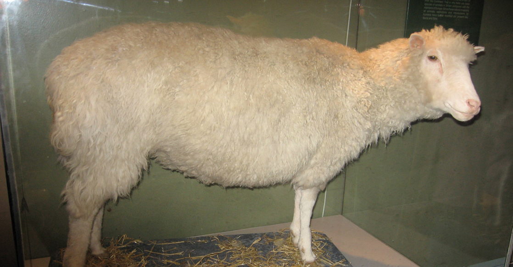
The three letters "DNA" have now become associated with crime solving, paternity testing, human identification, and genetic testing. DNA can be retrieved from hair, blood, or saliva. With the exception of identical twins, each person's DNA is unique and it is possible to detect differences between human beings on the basis of their unique DNA sequence.
DNA analysis has many practical applications beyond forensics and paternity testing. DNA testing is used for tracing genealogy and identifying pathogens. In the medical field, DNA is used in diagnostics, new vaccine development, and cancer therapy. It is now possible to determine predisposition to many diseases by analyzing genes.
DNA is the genetic material passed from parent to offspring for all life on Earth. The technology of molecular genetics developed in the last half century has enabled us to see deep into the history of life to deduce the relationships between living things in ways never thought possible. It also allows us to understand the workings of evolution in populations of organisms. Over a thousand species have had their entire genome sequenced, and there have been thousands of individual human genome sequences completed. These sequences will allow us to understand human disease and the relationship of humans to the rest of the tree of life. Finally, molecular genetics techniques have revolutionized plant and animal breeding for human agricultural needs. All of these advances in biotechnology depended on basic research leading to the discovery of the structure of DNA in 1953, and the research since then that has uncovered the details of DNA replication and the complex process leading to the expression of DNA in the form of proteins in the cell.
- Describe the structure of DNA
- Describe how eukaryotic and prokaryotic DNA is arranged in the cell
- Explain the process of DNA replication
- Explain the importance of telomerase to DNA replication
- Describe mechanisms of DNA repair
- Explain the central dogma
- Explain the main steps of transcription
- Describe how eukaryotic mRNA is processed
- Describe the different steps in protein synthesis
- Discuss the role of ribosomes in protein synthesis
- Describe the genetic code and how the nucleotide sequence determines the amino acid and the protein sequence
- Discuss why every cell does not express all of its genes
- Describe how prokaryotic gene expression occurs at the transcriptional level
- Understand that eukaryotic gene expression occurs at the epigenetic, transcriptional, post-transcriptional, translational, and post-translational levels
| # | Lesson | Key Concepts | Source |
|---|---|---|---|
| 1 | Structure of DNA | Watson, Crick, Franklin, nucleotides, purines, pyrimidines, double helix, base pairing, Chargaff's rules, antiparallel strands, DNA vs RNA, prokaryotic vs eukaryotic DNA, histones | CB 9.1 |
| 2 | DNA Replication | Semiconservative replication, replication fork, helicase, primase, DNA polymerase, leading/lagging strands, Okazaki fragments, telomeres, telomerase, proofreading, mismatch repair | CB 9.2 |
| 3 | Transcription | Central dogma, RNA polymerase, template strand, mRNA, promoter, initiation, elongation, termination, eukaryotic mRNA processing, 5' cap, poly-A tail, introns, exons, splicing | CB 9.3 |
| 4 | Translation | Ribosomes, tRNA, genetic code, codons, start/stop codons, initiation complex, polypeptide elongation, A/P/E sites | CB 9.4 |
| 5 | Gene Regulation | Gene expression, prokaryotic regulation, lac operon, eukaryotic regulation, epigenetic/transcriptional/post-transcriptional/translational/post-translational levels, alternative RNA splicing | CB 9.5 |
| 6 | Practice Test | All topics — comprehensive assessment | All |
| Standard | Description | Lessons |
|---|---|---|
| BIO.6a | The structure of DNA and its role in genetic inheritance | 1, 2 |
| BIO.6b | The processes of transcription and translation | 3, 4 |
| BIO.6c | Gene regulation and expression | 5 |
- Describe the structure of DNA
- Describe how eukaryotic and prokaryotic DNA is arranged in the cell
In the 1950s, Francis Crick and James Watson worked together at the University of Cambridge, England, to determine the structure of DNA. Other scientists, such as Linus Pauling and Maurice Wilkins, were also actively exploring this field. Pauling had discovered the secondary structure of proteins using X-ray crystallography. X-ray crystallography is a method for investigating molecular structure by observing the patterns formed by X-rays shot through a crystal of the substance. The patterns give important information about the structure of the molecule of interest. In Wilkins' lab, researcher Rosalind Franklin was using X-ray crystallography to understand the structure of DNA. Watson and Crick were able to piece together the puzzle of the DNA molecule using Franklin's data (Figure 9.2). Watson and Crick also had key pieces of information available from other researchers such as Chargaff's rules. Chargaff had shown that of the four kinds of monomers (nucleotides) present in a DNA molecule, two types were always present in equal amounts and the remaining two types were also always present in equal amounts. This meant they were always paired in some way. In 1962, James Watson, Francis Crick, and Maurice Wilkins were awarded the Nobel Prize in Medicine for their work in determining the structure of DNA.
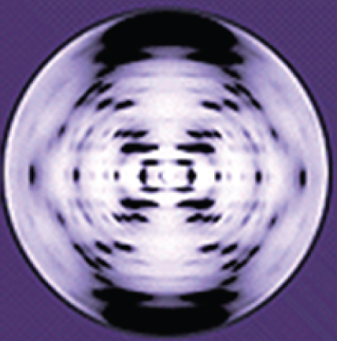
Now let's consider the structure of the two types of nucleic acids, deoxyribonucleic acid (DNA) and ribonucleic acid (RNA). The building blocks of DNA are nucleotides, which are made up of three parts: a deoxyribose (5-carbon sugar), a phosphate group, and a nitrogenous base (Figure 9.3). There are four types of nitrogenous bases in DNA. Adenine (A) and guanine (G) are double-ringed purines, and cytosine (C) and thymine (T) are smaller, single-ringed pyrimidines. The nucleotide is named according to the nitrogenous base it contains.
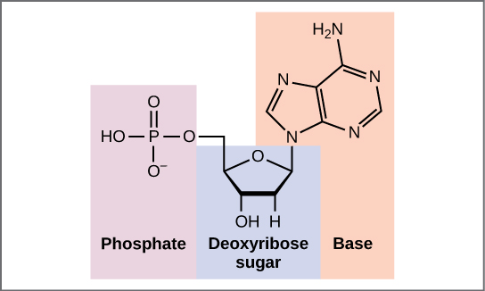
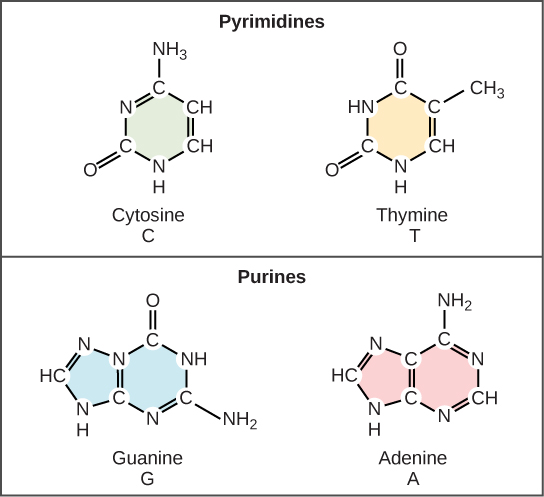
The phosphate group of one nucleotide bonds covalently with the sugar molecule of the next nucleotide, and so on, forming a long polymer of nucleotide monomers. The sugar–phosphate groups line up in a "backbone" for each single strand of DNA, and the nucleotide bases stick out from this backbone. The carbon atoms of the five-carbon sugar are numbered clockwise from the oxygen as 1', 2', 3', 4', and 5' (1' is read as "one prime"). The phosphate group is attached to the 5' carbon of one nucleotide and the 3' carbon of the next nucleotide. In its natural state, each DNA molecule is actually composed of two single strands held together along their length with hydrogen bonds between the bases.
Watson and Crick proposed that the DNA is made up of two strands that are twisted around each other to form a right-handed helix, called a double helix. Base-pairing takes place between a purine and pyrimidine: namely, A pairs with T, and G pairs with C. In other words, adenine and thymine are complementary base pairs, and cytosine and guanine are also complementary base pairs. This is the basis for Chargaff's rule; because of their complementarity, there is as much adenine as thymine in a DNA molecule and as much guanine as cytosine. Adenine and thymine are connected by two hydrogen bonds, and cytosine and guanine are connected by three hydrogen bonds. The two strands are anti-parallel in nature; that is, one strand will have the 3' carbon of the sugar in the "upward" position, whereas the other strand will have the 5' carbon in the upward position. The diameter of the DNA double helix is uniform throughout because a purine (two rings) always pairs with a pyrimidine (one ring) and their combined lengths are always equal. (Figure 9.4).
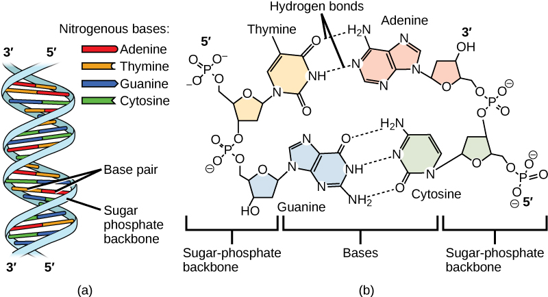
There is a second nucleic acid in all cells called ribonucleic acid, or RNA. Like DNA, RNA is a polymer of nucleotides. Each of the nucleotides in RNA is made up of a nitrogenous base, a five-carbon sugar, and a phosphate group. In the case of RNA, the five-carbon sugar is ribose, not deoxyribose. Ribose has a hydroxyl group at the 2' carbon, unlike deoxyribose, which has only a hydrogen atom (Figure 9.5).
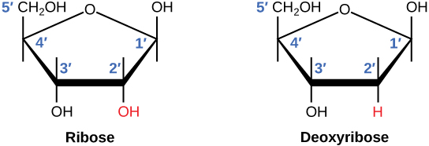
RNA nucleotides contain the nitrogenous bases adenine, cytosine, and guanine. However, they do not contain thymine, which is instead replaced by uracil, symbolized by a "U." RNA exists as a single-stranded molecule rather than a double-stranded helix. Molecular biologists have named several kinds of RNA on the basis of their function. These include messenger RNA (mRNA), transfer RNA (tRNA), and ribosomal RNA (rRNA)—molecules that are involved in the production of proteins from the DNA code.
DNA is a working molecule; it must be replicated when a cell is ready to divide, and it must be "read" to produce the molecules, such as proteins, to carry out the functions of the cell. For this reason, the DNA is protected and packaged in very specific ways. In addition, DNA molecules can be very long. Stretched end-to-end, the DNA molecules in a single human cell would come to a length of about 2 meters. Thus, the DNA for a cell must be packaged in a very ordered way to fit and function within a structure (the cell) that is not visible to the naked eye.
The chromosomes of prokaryotes are much simpler than those of eukaryotes in many of their features (Figure 9.6). Most prokaryotes contain a single, circular chromosome that is found in an area in the cytoplasm called the nucleoid.
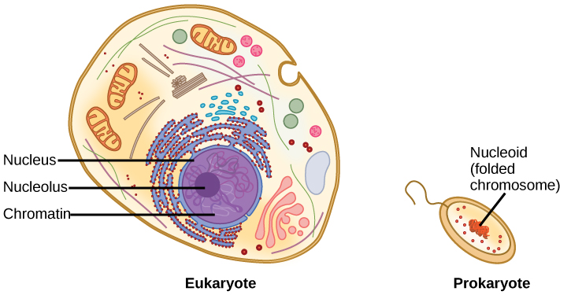
The size of the genome in one of the most well-studied prokaryotes, Escherichia coli, is 4.6 million base pairs, which would extend a distance of about 1.6 mm if stretched out. So how does this fit inside a small bacterial cell? The DNA is twisted beyond the double helix in what is known as supercoiling. Some proteins are known to be involved in the supercoiling; other proteins and enzymes help in maintaining the supercoiled structure.
Eukaryotes, whose chromosomes each consist of a linear DNA molecule, employ a different type of packing strategy to fit their DNA inside the nucleus (Figure 9.7). Before the structure of DNA was even uncovered, Marie Maynard Daly and Arthur E. Mirsky conducted extensive research in the 1940s and 1950s to understand the molecules and structures in involved. At the most basic level, DNA is wrapped around proteins known as histones to form structures called nucleosomes. The DNA is wrapped tightly around the histone core. This nucleosome is linked to the next one by a short strand of DNA that is free of histones. This is also known as the "beads on a string" structure; the nucleosomes are the "beads" and the short lengths of DNA between them are the "string." The nucleosomes, with their DNA coiled around them, stack compactly onto each other to form a 30-nm–wide fiber. This fiber is further coiled into a thicker and more compact structure. At the metaphase stage of mitosis, when the chromosomes are lined up in the center of the cell, the chromosomes are at their most compacted. They are approximately 700 nm in width, and are found in association with scaffold proteins.
In interphase, the phase of the cell cycle between mitoses at which the chromosomes are decondensed, eukaryotic chromosomes have two distinct regions that can be distinguished by staining. There is a tightly packaged region that stains darkly, and a less dense region. The darkly staining regions usually contain genes that are not active, and are found in the regions of the centromere and telomeres. The lightly staining regions usually contain genes that are active, with DNA packaged around nucleosomes but not further compacted.
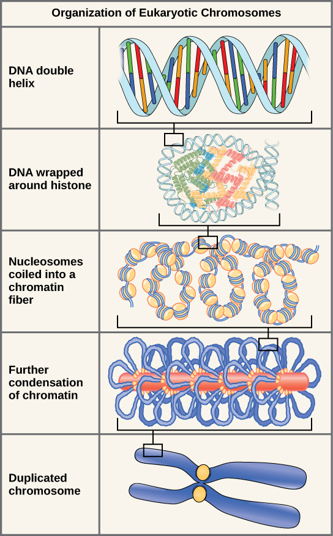
Describe the structure of a DNA nucleotide, explain how Chargaff's rules relate to complementary base pairing, and compare how DNA is organized in prokaryotic versus eukaryotic cells.
- Explain the process of DNA replication
- Explain the importance of telomerase to DNA replication
- Describe mechanisms of DNA repair
When a cell divides, it is important that each daughter cell receives an identical copy of the DNA. This is accomplished by the process of DNA replication. The replication of DNA occurs during the synthesis phase, or S phase, of the cell cycle, before the cell enters mitosis or meiosis.
The elucidation of the structure of the double helix provided a hint as to how DNA is copied. Recall that adenine nucleotides pair with thymine nucleotides, and cytosine with guanine. This means that the two strands are complementary to each other. For example, a strand of DNA with a nucleotide sequence of AGTCATGA will have a complementary strand with the sequence TCAGTACT (Figure 9.8).
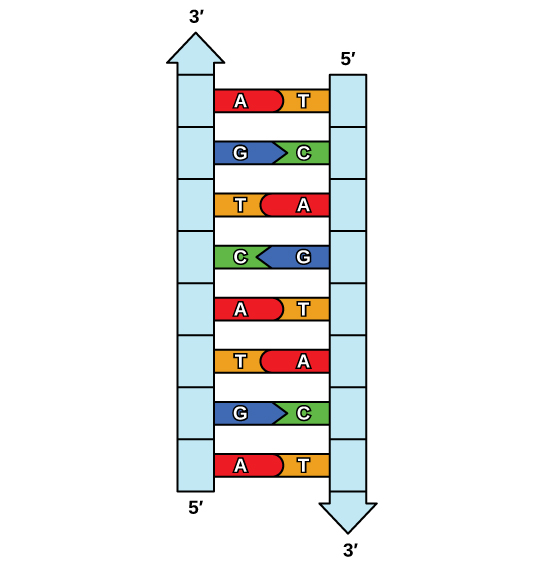
Because of the complementarity of the two strands, having one strand means that it is possible to recreate the other strand. This model for replication suggests that the two strands of the double helix separate during replication, and each strand serves as a template from which the new complementary strand is copied (Figure 9.9).
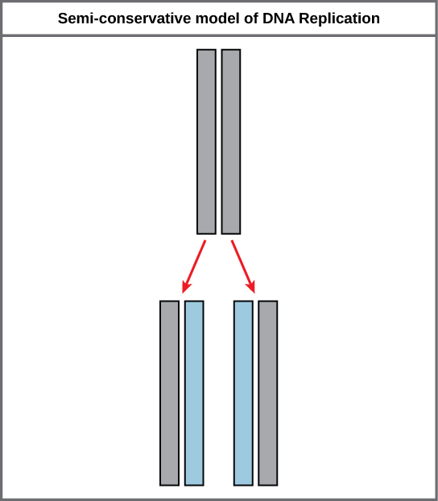
During DNA replication, each of the two strands that make up the double helix serves as a template from which new strands are copied. The new strand will be complementary to the parental or "old" strand. Each new double strand consists of one parental strand and one new daughter strand. This is known as semiconservative replication. When two DNA copies are formed, they have an identical sequence of nucleotide bases and are divided equally into two daughter cells.
Because eukaryotic genomes are very complex, DNA replication is a very complicated process that involves several enzymes and other proteins. It occurs in three main stages: initiation, elongation, and termination.
Recall that eukaryotic DNA is bound to proteins known as histones to form structures called nucleosomes. During initiation, the DNA is made accessible to the proteins and enzymes involved in the replication process. How does the replication machinery know where on the DNA double helix to begin? It turns out that there are specific nucleotide sequences called origins of replication at which replication begins. Certain proteins bind to the origin of replication while an enzyme called helicase unwinds and opens up the DNA helix. As the DNA opens up, Y-shaped structures called replication forks are formed (Figure 9.10). Two replication forks are formed at the origin of replication, and these get extended in both directions as replication proceeds. There are multiple origins of replication on the eukaryotic chromosome, such that replication can occur simultaneously from several places in the genome.
During elongation, an enzyme called DNA polymerase adds DNA nucleotides to the 3' end of the template. Because DNA polymerase can only add new nucleotides at the end of a backbone, a primer sequence, which provides this starting point, is added with complementary RNA nucleotides. This primer is removed later, and the nucleotides are replaced with DNA nucleotides. One strand, which is complementary to the parental DNA strand, is synthesized continuously toward the replication fork so the polymerase can add nucleotides in this direction. This continuously synthesized strand is known as the leading strand. Because DNA polymerase can only synthesize DNA in a 5' to 3' direction, the other new strand is put together in short pieces called Okazaki fragments. The Okazaki fragments each require a primer made of RNA to start the synthesis. The strand with the Okazaki fragments is known as the lagging strand. As synthesis proceeds, an enzyme removes the RNA primer, which is then replaced with DNA nucleotides, and the gaps between fragments are sealed by an enzyme called DNA ligase.
The process of DNA replication can be summarized as follows:
- DNA unwinds at the origin of replication.
- New bases are added to the complementary parental strands. One new strand is made continuously, while the other strand is made in pieces.
- Primers are removed, new DNA nucleotides are put in place of the primers and the backbone is sealed by DNA ligase.
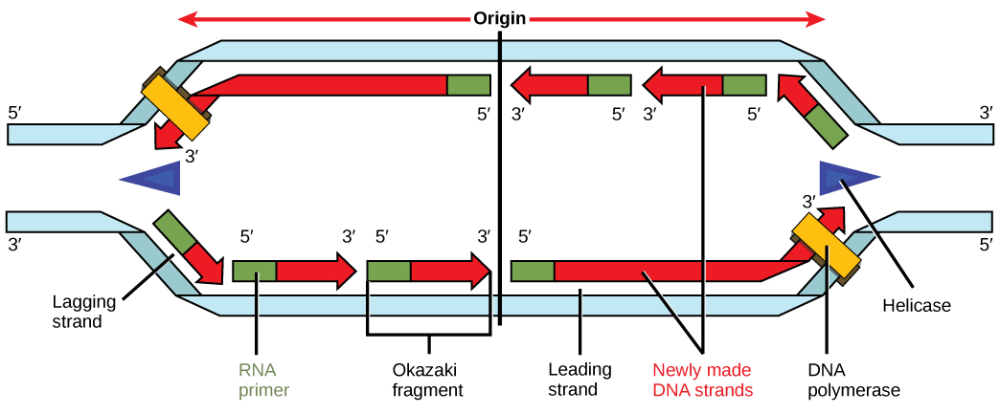
Because eukaryotic chromosomes are linear, DNA replication comes to the end of a line in eukaryotic chromosomes. As you have learned, the DNA polymerase enzyme can add nucleotides in only one direction. In the leading strand, synthesis continues until the end of the chromosome is reached; however, on the lagging strand there is no place for a primer to be made for the DNA fragment to be copied at the end of the chromosome. This presents a problem for the cell because the ends remain unpaired, and over time these ends get progressively shorter as cells continue to divide. The ends of the linear chromosomes are known as telomeres, which have repetitive sequences that do not code for a particular gene. As a consequence, it is telomeres that are shortened with each round of DNA replication instead of genes. For example, in humans, a six base-pair sequence, TTAGGG, is repeated 100 to 1000 times. The discovery of the enzyme telomerase (Figure 9.11) helped in the understanding of how chromosome ends are maintained. The telomerase attaches to the end of the chromosome, and complementary bases to the RNA template are added on the end of the DNA strand. Once the lagging strand template is sufficiently elongated, DNA polymerase can now add nucleotides that are complementary to the ends of the chromosomes. Thus, the ends of the chromosomes are replicated.
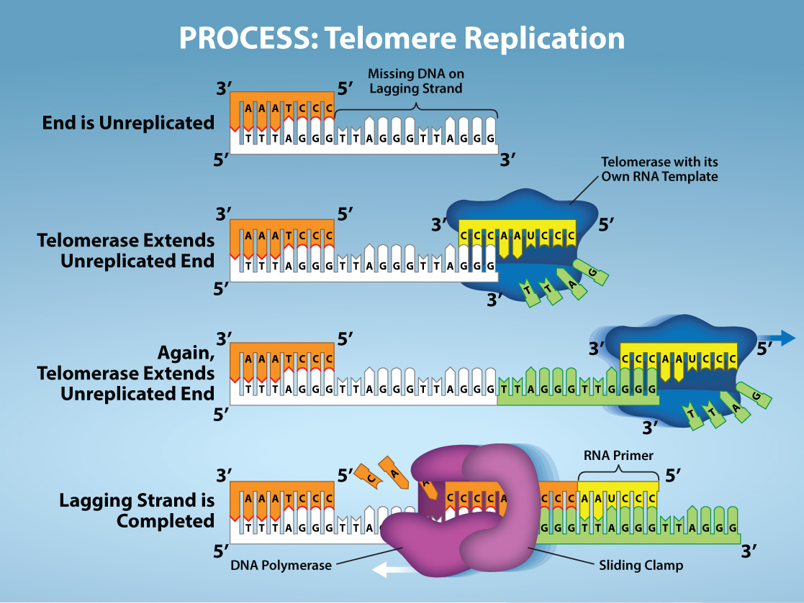
Telomerase is typically found to be active in germ cells, adult stem cells, and some cancer cells. For her discovery of telomerase and its action, Elizabeth Blackburn (Figure 9.12) received the Nobel Prize for Medicine and Physiology in 2009. Later research using HeLa cells (obtained from Henrietta Lacks) confirmed that telomerase is present in human cells. And in 2001, researchers including Diane L. Wright found that telomerase is necessary for cells in human embryos to rapidly proliferate.
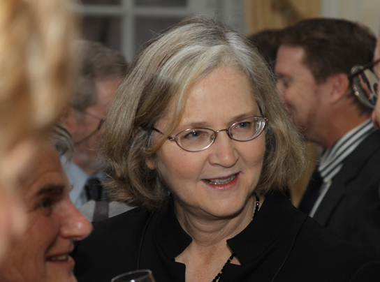
Telomerase is not active in adult somatic cells. Adult somatic cells that undergo cell division continue to have their telomeres shortened. This essentially means that telomere shortening is associated with aging. In 2010, scientists found that telomerase can reverse some age-related conditions in mice, and this may have potential in regenerative medicine. Telomerase-deficient mice were used in these studies; these mice have tissue atrophy, stem-cell depletion, organ system failure, and impaired tissue injury responses. Telomerase reactivation in these mice caused extension of telomeres, reduced DNA damage, reversed neurodegeneration, and improved functioning of the testes, spleen, and intestines. Thus, telomere reactivation may have potential for treating age-related diseases in humans.
Recall that the prokaryotic chromosome is a circular molecule with a less extensive coiling structure than eukaryotic chromosomes. The eukaryotic chromosome is linear and highly coiled around proteins. While there are many similarities in the DNA replication process, these structural differences necessitate some differences in the DNA replication process in these two life forms.
DNA replication has been extremely well-studied in prokaryotes, primarily because of the small size of the genome and large number of variants available. Escherichia coli has 4.6 million base pairs in a single circular chromosome, and all of it gets replicated in approximately 42 minutes, starting from a single origin of replication and proceeding around the chromosome in both directions. This means that approximately 1000 nucleotides are added per second. The process is much more rapid than in eukaryotes. Table 9.1 summarizes the differences between prokaryotic and eukaryotic replications.
| Property | Prokaryotes | Eukaryotes |
|---|---|---|
| Origin of replication | Single | Multiple |
| Rate of replication | 1000 nucleotides/s | 50 to 100 nucleotides/s |
| Chromosome structure | circular | linear |
| Telomerase | Not present | Present |
DNA polymerase can make mistakes while adding nucleotides. It edits the DNA by proofreading every newly added base. Incorrect bases are removed and replaced by the correct base, and then polymerization continues (Figure 9.13a). Most mistakes are corrected during replication, although when this does not happen, the mismatch repair mechanism is employed. Mismatch repair enzymes recognize the wrongly incorporated base and excise it from the DNA, replacing it with the correct base (Figure 9.13b). In yet another type of repair, nucleotide excision repair, the DNA double strand is unwound and separated, the incorrect bases are removed along with a few bases on the 5' and 3' end, and these are replaced by copying the template with the help of DNA polymerase (Figure 9.13c). Nucleotide excision repair is particularly important in correcting thymine dimers, which are primarily caused by ultraviolet light. In a thymine dimer, two thymine nucleotides adjacent to each other on one strand are covalently bonded to each other rather than their complementary bases. If the dimer is not removed and repaired it will lead to a mutation. Individuals with flaws in their nucleotide excision repair genes show extreme sensitivity to sunlight and develop skin cancers early in life.
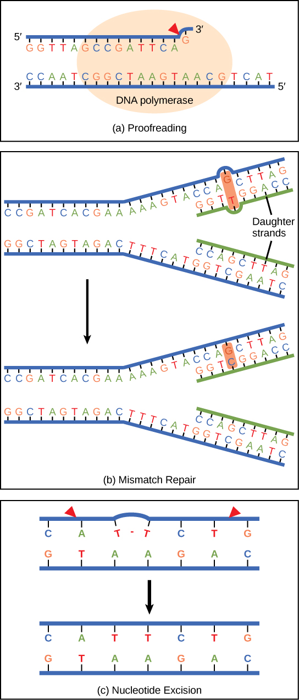
Most mistakes are corrected; if they are not, they may result in a mutation—defined as a permanent change in the DNA sequence. Mutations in repair genes may lead to serious consequences like cancer.
Explain the process of semiconservative DNA replication, including the roles of helicase, DNA polymerase, and DNA ligase. Describe the difference between the leading and lagging strands and explain why telomerase is important.
- Explain the central dogma
- Explain the main steps of transcription
- Describe how eukaryotic mRNA is processed
In both prokaryotes and eukaryotes, the second function of DNA (the first was replication) is to provide the information needed to construct the proteins necessary so that the cell can perform all of its functions. To do this, the DNA is "read" or transcribed into an mRNA molecule. The mRNA then provides the code to form a protein by a process called translation. Through the processes of transcription and translation, a protein is built with a specific sequence of amino acids that was originally encoded in the DNA. This module discusses the details of transcription.
The flow of genetic information in cells from DNA to mRNA to protein is described by the central dogma (Figure 9.14), which states that genes specify the sequences of mRNAs, which in turn specify the sequences of proteins.
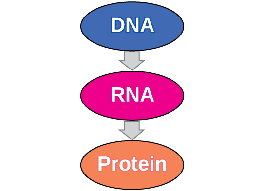
The copying of DNA to mRNA is relatively straightforward, with one nucleotide being added to the mRNA strand for every complementary nucleotide read in the DNA strand. The translation to protein is more complex because groups of three mRNA nucleotides correspond to one amino acid of the protein sequence. However, as we shall see in the next module, the translation to protein is still systematic, such that nucleotides 1 to 3 correspond to amino acid 1, nucleotides 4 to 6 correspond to amino acid 2, and so on.
Both prokaryotes and eukaryotes perform fundamentally the same process of transcription, with the important difference of the membrane-bound nucleus in eukaryotes. With the genes bound in the nucleus, transcription occurs in the nucleus of the cell and the mRNA transcript must be transported to the cytoplasm. The prokaryotes, which include bacteria and archaea, lack membrane-bound nuclei and other organelles, and transcription occurs in the cytoplasm of the cell. In both prokaryotes and eukaryotes, transcription occurs in three main stages: initiation, elongation, and termination.
Transcription requires the DNA double helix to partially unwind in the region of mRNA synthesis. The region of unwinding is called a transcription bubble. The DNA sequence onto which the proteins and enzymes involved in transcription bind to initiate the process is called a promoter. In most cases, promoters exist upstream of the genes they regulate. The specific sequence of a promoter is very important because it determines whether the corresponding gene is transcribed all of the time, some of the time, or hardly at all (Figure 9.15).

Transcription always proceeds from one of the two DNA strands, which is called the template strand. The mRNA product is complementary to the template strand and is almost identical to the other DNA strand, called the nontemplate strand, with the exception that RNA contains a uracil (U) in place of the thymine (T) found in DNA. During elongation, an enzyme called RNA polymerase proceeds along the DNA template adding nucleotides by base pairing with the DNA template in a manner similar to DNA replication, with the difference that an RNA strand is being synthesized that does not remain bound to the DNA template. As elongation proceeds, the DNA is continuously unwound ahead of the core enzyme and rewound behind it (Figure 9.16).
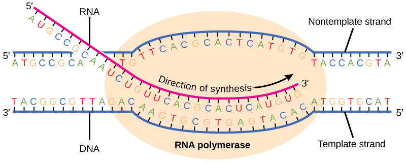
Once a gene is transcribed, the prokaryotic polymerase needs to be instructed to dissociate from the DNA template and liberate the newly made mRNA. Depending on the gene being transcribed, there are two kinds of termination signals, but both involve repeated nucleotide sequences in the DNA template that result in RNA polymerase stalling, leaving the DNA template, and freeing the mRNA transcript.
On termination, the process of transcription is complete. In a prokaryotic cell, by the time termination occurs, the transcript would already have been used to partially synthesize numerous copies of the encoded protein because these processes can occur concurrently using multiple ribosomes (polyribosomes) (Figure 9.17). In contrast, the presence of a nucleus in eukaryotic cells precludes simultaneous transcription and translation.
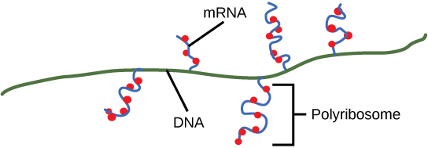
The newly transcribed eukaryotic mRNAs must undergo several processing steps before they can be transferred from the nucleus to the cytoplasm and translated into a protein. The additional steps involved in eukaryotic mRNA maturation create a molecule that is much more stable than a prokaryotic mRNA. For example, eukaryotic mRNAs last for several hours, whereas the typical prokaryotic mRNA lasts no more than five seconds.
The mRNA transcript is first coated in RNA-stabilizing proteins to prevent it from degrading while it is processed and exported out of the nucleus. This occurs while the pre-mRNA still is being synthesized by adding a special nucleotide "cap" to the 5' end of the growing transcript. In addition to preventing degradation, factors involved in protein synthesis recognize the cap to help initiate translation by ribosomes.
Once elongation is complete, an enzyme then adds a string of approximately 200 adenine residues to the 3' end, called the poly-A tail. This modification further protects the pre-mRNA from degradation and signals to cellular factors that the transcript needs to be exported to the cytoplasm.
Eukaryotic genes are composed of protein-coding sequences called exons (ex-on signifies that they are expressed) and intervening sequences called introns (int-ron denotes their intervening role). Introns are removed from the pre-mRNA during processing. Intron sequences in mRNA do not encode functional proteins. It is essential that all of a pre-mRNA's introns be completely and precisely removed before protein synthesis so that the exons join together to code for the correct amino acids. If the process errs by even a single nucleotide, the sequence of the rejoined exons would be shifted, and the resulting protein would be nonfunctional. The process of removing introns and reconnecting exons is called splicing (Figure 9.18). Introns are removed and degraded while the pre-mRNA is still in the nucleus.
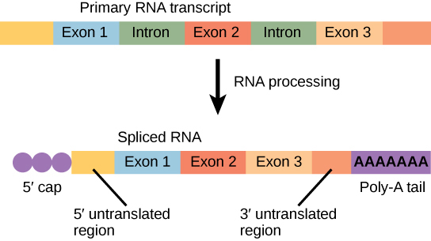
Explain the central dogma of molecular biology. Describe the three stages of transcription (initiation, elongation, termination) and explain the processing steps that eukaryotic mRNA must undergo before translation.
- Describe the different steps in protein synthesis
- Discuss the role of ribosomes in protein synthesis
- Describe the genetic code and how the nucleotide sequence determines the amino acid and the protein sequence
The synthesis of proteins is one of a cell's most energy-consuming metabolic processes. In turn, proteins account for more mass than any other component of living organisms (with the exception of water), and proteins perform a wide variety of the functions of a cell. The process of translation, or protein synthesis, involves decoding an mRNA message into a polypeptide product. Amino acids are covalently strung together in lengths ranging from approximately 50 amino acids to more than 1,000.
In addition to the mRNA template, many other molecules contribute to the process of translation. The composition of each component may vary across species; for instance, ribosomes may consist of different numbers of ribosomal RNAs (rRNA) and polypeptides depending on the organism. However, the general structures and functions of the protein synthesis machinery are comparable from bacteria to human cells. Translation requires the input of an mRNA template, ribosomes, tRNAs, and various enzymatic factors (Figure 9.19).
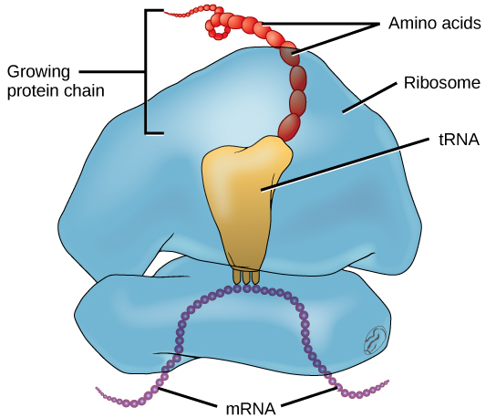
In E. coli, there are 200,000 ribosomes present in every cell at any given time. A ribosome is a complex macromolecule composed of structural and catalytic rRNAs, and many distinct polypeptides. In eukaryotes, the nucleolus is completely specialized for the synthesis and assembly of rRNAs.
Ribosomes are located in the cytoplasm in prokaryotes and in the cytoplasm and endoplasmic reticulum of eukaryotes. Ribosomes are made up of a large and a small subunit that come together for translation. The small subunit is responsible for binding the mRNA template, whereas the large subunit sequentially binds tRNAs, a type of RNA molecule that brings amino acids to the growing chain of the polypeptide. Each mRNA molecule is simultaneously translated by many ribosomes, all synthesizing protein in the same direction.
Depending on the species, 40 to 60 types of tRNA exist in the cytoplasm. Serving as adaptors, specific tRNAs bind to sequences on the mRNA template and add the corresponding amino acid to the polypeptide chain. Therefore, tRNAs are the molecules that actually "translate" the language of RNA into the language of proteins. For each tRNA to function, it must have its specific amino acid bonded to it. In the process of tRNA "charging," each tRNA molecule is bonded to its correct amino acid.
To summarize what we know to this point, the cellular process of transcription generates messenger RNA (mRNA), a mobile molecular copy of one or more genes with an alphabet of A, C, G, and uracil (U). Translation of the mRNA template converts nucleotide-based genetic information into a protein product. Protein sequences consist of 20 commonly occurring amino acids; therefore, it can be said that the protein alphabet consists of 20 letters. Each amino acid is defined by a three-nucleotide sequence called the triplet codon. The relationship between a nucleotide codon and its corresponding amino acid is called the genetic code.
Given the different numbers of "letters" in the mRNA and protein "alphabets," combinations of nucleotides corresponded to single amino acids. Using a three-nucleotide code means that there are a total of 64 (4 × 4 × 4) possible combinations; therefore, a given amino acid is encoded by more than one nucleotide triplet (Figure 9.20).
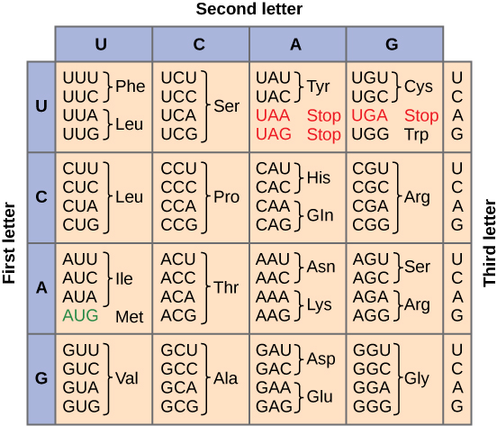
Three of the 64 codons terminate protein synthesis and release the polypeptide from the translation machinery. These triplets are called stop codons. Another codon, AUG, also has a special function. In addition to specifying the amino acid methionine, it also serves as the start codon to initiate translation. The reading frame for translation is set by the AUG start codon near the 5' end of the mRNA. The genetic code is universal. With a few exceptions, virtually all species use the same genetic code for protein synthesis, which is powerful evidence that all life on Earth shares a common origin.
Just as with mRNA synthesis, protein synthesis can be divided into three phases: initiation, elongation, and termination. The process of translation is similar in prokaryotes and eukaryotes. Here we will explore how translation occurs in E. coli, a representative prokaryote, and specify any differences between prokaryotic and eukaryotic translation.
Protein synthesis begins with the formation of an initiation complex. In E. coli, this complex involves the small ribosome subunit, the mRNA template, three initiation factors, and a special initiator tRNA. The initiator tRNA interacts with the AUG start codon, and links to a special form of the amino acid methionine that is typically removed from the polypeptide after translation is complete.
In prokaryotes and eukaryotes, the basics of polypeptide elongation are the same, so we will review elongation from the perspective of E. coli. The large ribosomal subunit of E. coli consists of three compartments: the A site binds incoming charged tRNAs (tRNAs with their attached specific amino acids). The P site binds charged tRNAs carrying amino acids that have formed bonds with the growing polypeptide chain but have not yet dissociated from their corresponding tRNA. The E site releases dissociated tRNAs so they can be recharged with free amino acids. The ribosome shifts one codon at a time, catalyzing each process that occurs in the three sites. With each step, a charged tRNA enters the complex, the polypeptide becomes one amino acid longer, and an uncharged tRNA departs. The energy for each bond between amino acids is derived from GTP, a molecule similar to ATP (Figure 9.21). Amazingly, the E. coli translation apparatus takes only 0.05 seconds to add each amino acid, meaning that a 200-amino acid polypeptide could be translated in just 10 seconds.
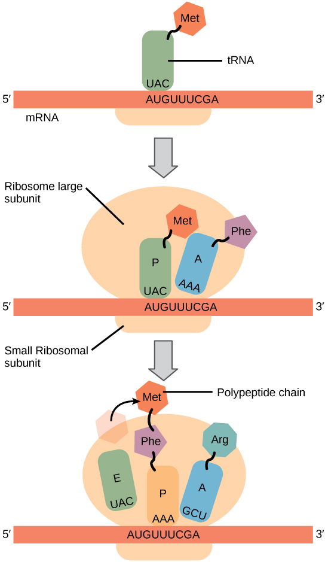
Termination of translation occurs when a stop codon (UAA, UAG, or UGA) is encountered. When the ribosome encounters the stop codon, the growing polypeptide is released and the ribosome subunits dissociate and leave the mRNA. After many ribosomes have completed translation, the mRNA is degraded so the nucleotides can be reused in another transcription reaction.
Describe the roles of the three ribosomal sites (A, P, and E) during translation. Explain how the genetic code is "read" by the ribosome, starting from the AUG start codon, and what happens when a stop codon is reached.
- Discuss why every cell does not express all of its genes
- Describe how prokaryotic gene expression occurs at the transcriptional level
- Understand that eukaryotic gene expression occurs at the epigenetic, transcriptional, post-transcriptional, translational, and post-translational levels
For a cell to function properly, necessary proteins must be synthesized at the proper time. All organisms and cells control or regulate the transcription and translation of their DNA into protein. The process of turning on a gene to produce RNA and protein is called gene expression. Whether in a simple unicellular organism or in a complex multicellular organism, each cell controls when and how its genes are expressed. For this to occur, there must be a mechanism to control when a gene is expressed to make RNA and protein, how much of the protein is made, and when it is time to stop making that protein because it is no longer needed.
Cells in multicellular organisms are specialized; cells in different tissues look very different and perform different functions. For example, a muscle cell is very different from a liver cell, which is very different from a skin cell. These differences are a consequence of the expression of different sets of genes in each of these cells. All cells have certain basic functions they must perform for themselves, such as converting the energy in sugar molecules into energy in ATP. Each cell also has many genes that are not expressed, and expresses many that are not expressed by other cells, such that it can carry out its specialized functions. In addition, cells will turn on or off certain genes at different times in response to changes in the environment or at different times during the development of the organism. Unicellular organisms, both eukaryotic and prokaryotic, also turn on and off genes in response to the demands of their environment so that they can respond to special conditions.
The control of gene expression is extremely complex. Malfunctions in this process are detrimental to the cell and can lead to the development of many diseases, including cancer.
To understand how gene expression is regulated, we must first understand how a gene becomes a functional protein in a cell. The process occurs in both prokaryotic and eukaryotic cells, just in slightly different fashions.
Because prokaryotic organisms lack a cell nucleus, the processes of transcription and translation occur almost simultaneously. When the protein is no longer needed, transcription stops. As a result, the primary method to control what type and how much protein is expressed in a prokaryotic cell is through the regulation of DNA transcription into RNA. All the subsequent steps happen automatically. When more protein is required, more transcription occurs. Therefore, in prokaryotic cells, the control of gene expression is almost entirely at the transcriptional level.
The first example of such control was discovered using E. coli in the 1950s and 1960s by French researchers and is called the lac operon. The lac operon is a stretch of DNA with three adjacent genes that code for proteins that participate in the absorption and metabolism of lactose, a food source for E. coli. When lactose is not present in the bacterium's environment, the lac genes are transcribed in small amounts. When lactose is present, the genes are transcribed and the bacterium is able to use the lactose as a food source. The operon also contains a promoter sequence to which the RNA polymerase binds to begin transcription; between the promoter and the three genes is a region called the operator. When there is no lactose present, a protein known as a repressor binds to the operator and prevents RNA polymerase from binding to the promoter, except in rare cases. Thus very little of the protein products of the three genes is made. When lactose is present, an end product of lactose metabolism binds to the repressor protein and prevents it from binding to the operator. This allows RNA polymerase to bind to the promoter and freely transcribe the three genes, allowing the organism to metabolize the lactose.
Eukaryotic cells, in contrast, have intracellular organelles and are much more complex. Recall that in eukaryotic cells, the DNA is contained inside the cell's nucleus and it is transcribed into mRNA there. The newly synthesized mRNA is then transported out of the nucleus into the cytoplasm, where ribosomes translate the mRNA into protein. The processes of transcription and translation are physically separated by the nuclear membrane; transcription occurs only within the nucleus, and translation only occurs outside the nucleus in the cytoplasm. The regulation of gene expression can occur at all stages of the process (Figure 9.22). Regulation may occur when the DNA is uncoiled and loosened from nucleosomes to bind transcription factors (epigenetic level), when the RNA is transcribed (transcriptional level), when RNA is processed and exported to the cytoplasm after it is transcribed (post-transcriptional level), when the RNA is translated into protein (translational level), or after the protein has been made (post-translational level).
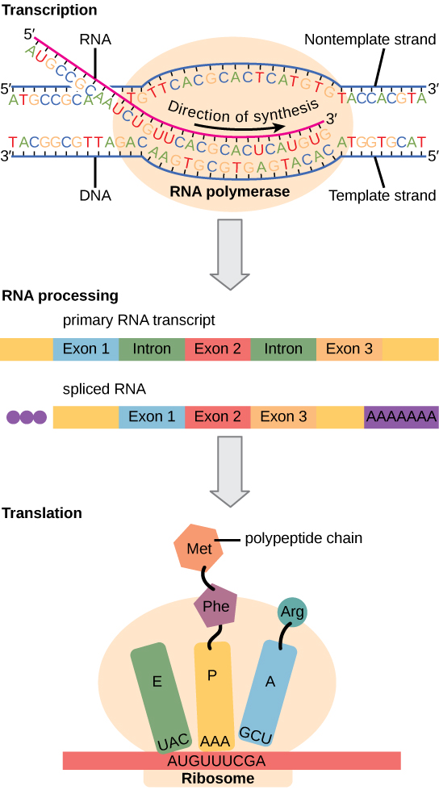
The differences in the regulation of gene expression between prokaryotes and eukaryotes are summarized in Table 9.2.
| Prokaryotic organisms | Eukaryotic organisms |
|---|---|
| Lack nucleus | Contain nucleus |
| RNA transcription and protein translation occur almost simultaneously | RNA transcription occurs prior to protein translation, and it takes place in the nucleus. RNA translation to protein occurs in the cytoplasm. RNA post-processing includes addition of a 5' cap, poly-A tail, and excision of introns and splicing of exons. |
| Gene expression is regulated primarily at the transcriptional level | Gene expression is regulated at many levels (epigenetic, transcriptional, post-transcriptional, translational, and post-translational) |
In the 1970s, genes were first observed that exhibited alternative RNA splicing. Alternative RNA splicing is a mechanism that allows different protein products to be produced from one gene when different combinations of introns (and sometimes exons) are removed from the transcript (Figure 9.23). This alternative splicing can be haphazard, but more often it is controlled and acts as a mechanism of gene regulation, with the frequency of different splicing alternatives controlled by the cell as a way to control the production of different protein products in different cells, or at different stages of development. Alternative splicing is now understood to be a common mechanism of gene regulation in eukaryotes; according to one estimate, 70% of genes in humans are expressed as multiple proteins through alternative splicing.
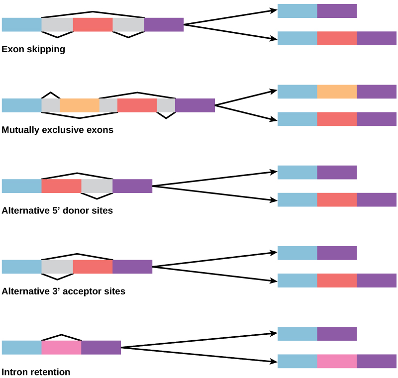
How could alternative splicing evolve? Introns have a beginning and ending recognition sequence, and it is easy to imagine the failure of the splicing mechanism to identify the end of an intron and find the end of the next intron, thus removing two introns and the intervening exon. In fact, there are mechanisms in place to prevent such exon skipping, but mutations are likely to lead to their failure. Such "mistakes" would more than likely produce a nonfunctional protein. Indeed, the cause of many genetic diseases is alternative splicing rather than mutations in a sequence. However, alternative splicing would create a protein variant without the loss of the original protein, opening up possibilities for adaptation of the new variant to new functions. Gene duplication has played an important role in the evolution of new functions in a similar way—by providing genes that may evolve without eliminating the original functional protein.
Explain how the lac operon works in prokaryotes. Then describe at least three different levels at which eukaryotic gene expression can be regulated and why this multi-level control is necessary.
- The structure of DNA (nucleotides, base pairing, double helix, purines/pyrimidines, antiparallel strands) — CB 9.1
- DNA replication (semiconservative, replication fork, leading/lagging strand, telomerase, DNA repair) — CB 9.2
- Transcription (central dogma, RNA polymerase, mRNA processing, introns/exons) — CB 9.3
- Translation (codons, tRNA, ribosome structure, start/stop codons, genetic code) — CB 9.4
- How genes are regulated (operons, epigenetics, transcription factors, alternative splicing) — CB 9.5